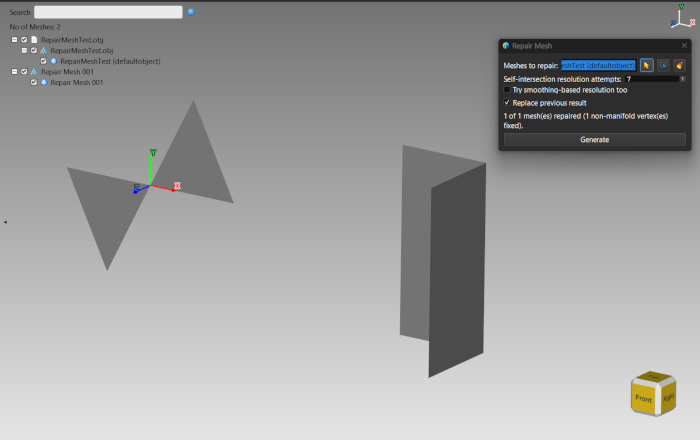
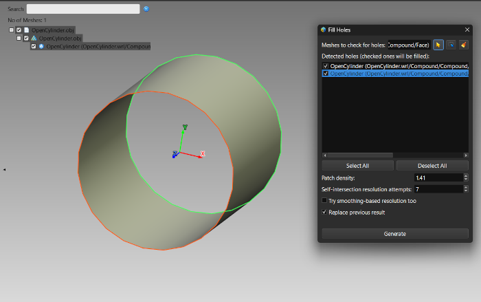
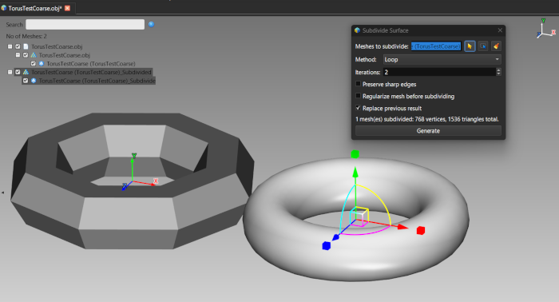
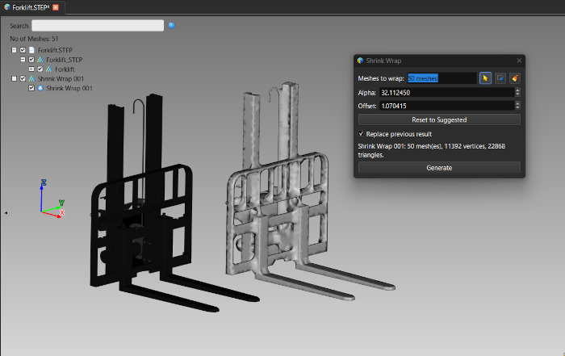
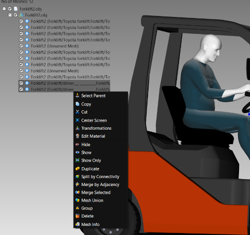

Lección 26: Herramientas de malla
Introducción
No todos los modelos llegan limpios: los escaneos tienen agujeros y ruido, las exportaciones CAD tienen topología rota y a veces necesita una envolvente limpia alrededor de varias piezas. ModelViewer tiene un conjunto de herramientas de malla para estas tareas, basadas en la biblioteca de geometría CGAL. Esta lección recorre Reparar malla, Rellenar agujeros, Subdividir superficie, Envoltura retráctil y Reconstruir superficie, y después las operaciones de fusión y división del menú contextual.
Reparar malla
Herramientas → Reparar malla... pasa cada malla de la lista de trabajo por el conjunto de reparación: geometría duplicada y degenerada, vértices no variedad, orientación inconsistente y autointersecciones. Es solo una limpieza de defectos: nunca rellena agujeros ni fuerza el cierre, de modo que un panel abierto a propósito sigue abierto. Una malla que ya es válida se omite y no recibe un nodo nuevo.
RepairMeshTest.obj: una malla construida para contener todos los defectos que trata la reparación, en tres regiones separadas, empezando por una pajarita de dos abanicos de triángulos que comparten solo un vértice.
El diálogo Reparar malla con su etiqueta de estado, junto al resultado reparadoRellenar agujeros
Herramientas → Rellenar agujeros... encuentra cada bucle de borde de las mallas de la lista de trabajo y le deja decidir qué bucles son defectos reales y cuáles un borde abierto a propósito. Solo se parchean los bucles marcados.
OpenCylinder.obj, que tiene un extremo abierto, e inicie Herramientas → Rellenar agujeros....
Un agujero detectado resaltado en naranja antes de parchearloSubdividir superficie
Herramientas → Subdividir superficie... suaviza una malla con subdivisión Loop o Catmull-Clark. Abra TorusTestCoarse.obj, un toro grueso de solo 96 triángulos, y pruebe:
- Método: Loop sigue basado en triángulos; Catmull-Clark trabaja internamente con cuadriláteros y se vuelve a triangular después. Ambos suelen verse igual de suaves.
- Iteraciones: cada paso cuadruplica aproximadamente el número de triángulos, así que 1 o 2 bastan para ver el efecto.
- Conservar aristas vivas (activado de forma predeterminada) mantiene infinitamente afilada cualquier arista doblada 30 grados o más: las tapas planas de un cilindro y las esquinas de un bloque siguen nítidas. Desactívelo para el aspecto clásico totalmente suave, en el que un cubo se convierte en una masa redondeada.

El toro grueso (izquierda) y su resultado subdividido y suave (derecha)Envoltura retráctil
Herramientas → Envoltura retráctil... combina una o más mallas seleccionadas en una única envolvente nueva estanca, mediante envoltura alfa. Las entradas no necesitan compartir material ni ser variedades. Alfa y Desfase fijan lo ajustada que queda la envolvente y cuánto se separa; Restablecer al valor sugerido calcula valores iniciales razonables a partir del cuadro delimitador de la selección. La selección original queda intacta.

Una envolvente retráctil alrededor de varias piezas, junto al originalReconstruir superficie
Herramientas → Reconstruir superficie... crea una superficie triangulada nueva a partir de las posiciones de los puntos de las mallas o nubes de puntos seleccionadas; las caras existentes se ignoran. Nitidez equilibra suavidad y aristas vivas, Tolerancia de borde fija qué tan grande puede ser un hueco que la reconstrucción puede salvar y Simplificar la nube de puntos antes de la reconstrucción muestra un Espaciado objetivo que fusiona antes los puntos más cercanos: más rápido en escaneos grandes o ruidosos, a costa del detalle fino.
Fusionar, dividir y agrupar (menú contextual)
Con mallas seleccionadas, el menú contextual del árbol o de la vista ofrece estas operaciones. Todas añaden nodos de malla nuevos y quitan los originales, y todas se pueden deshacer salvo Seleccionar padre.
| Operación | Qué hace |
|---|---|
| Dividir por conectividad | Divide cada malla seleccionada en sus piezas desconectadas, una malla nueva por pieza; una malla que ya es de una sola pieza se deja como está. |
| Fusionar por adyacencia | Agrupa la selección en conjuntos que se tocan (por posición de vértice compartida) y fusiona cada conjunto en una malla; las mallas que no tocan nada se dejan como están. |
| Fusionar selección | Combina toda la selección en una malla nueva por simple concatenación, se toquen o no. |
| Unión de mallas | Intenta una unión booleana real de la geometría reparada; si falla la reparación o el paso booleano, recurre a la simple concatenación, como Fusionar selección. |
| Agrupar | Solo reorganiza el árbol de la escena: crea un nodo de grupo y mueve las mallas seleccionadas a él. La geometría no cambia. |
| Seleccionar padre | Selecciona el padre en el árbol del elemento sobre el que hizo clic derecho: solo navegación. |

Las operaciones de malla en el menú contextual